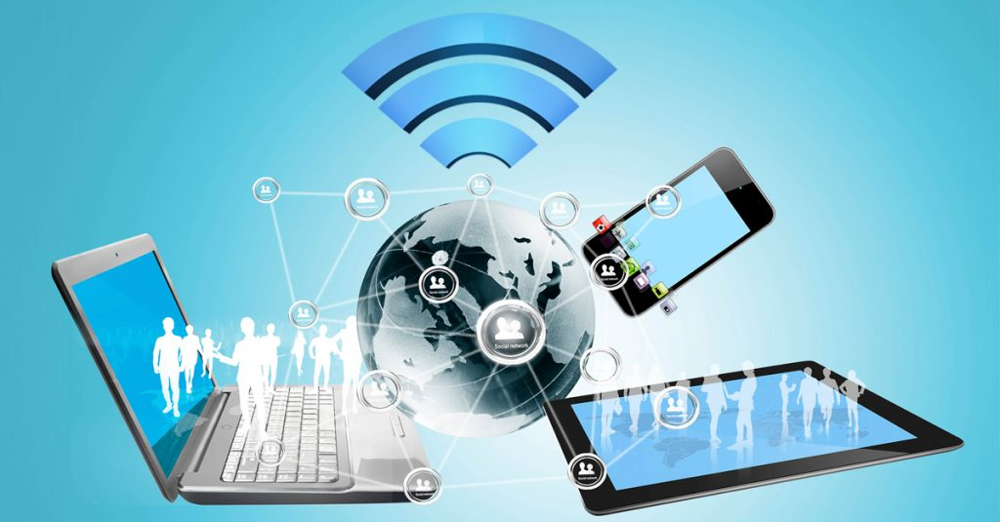

Technology's Impact on Daily Life

Almost every facet of 21st-century existence is influenced by technology, from transportation efficiency and safety to food
and healthcare availability, sociability, and productivity. The internet's power has made it easier to create worldwide
communities and exchange information and resources. Overuse of various technologies, on the other hand, has been linked to
a loss in mental health, increasing social divide, and privacy issues. Every day, we take technology for granted, whether
it's delivering the latest news, making our coffee, or connecting us with a loved one halfway across the nation (or even the
world). Which of the most recent technologies do we find ourselves impossible to imagine life without? Is the coronavirus
outbreak increasing our dependency on technology, or is it assisting us in dealing with the problems of the year?
In today's society, technology is always increasing and improving at dizzying pace. It is always changing as a result of
inventions and changes, unsure of how to come to a halt. Demands proportional to human strength have also vanished as a
result of technology advancements. Many jobs that many people must currently do may now be completed without the need of
human power thanks to technology. The capacity to do so is reliant on technology progress and advancement. One of the
advantages of technology is that it allows us to perform tasks without the assistance of humans. This is only one of the
many advantages of technology. We must recognize that the advantages of technology are as many as they are widespread.
Technology has a tremendous impact on the industry. Innovations are accelerating like an avalanche as a result of
technical developments. There isn't a list of technological benefits at the end. Please contact us at: if we need to share
some with you.The following are some of the advantages of technology:
1. The Internet is just the start of technology's benefits. We can speak with anyone, even if they are thousands of kilometers
away, thanks to the Internet.
2. As a result of technological improvements, people are becoming larger, and the requirement for human strength is decreasing.
Housewives' dishwashers, washing machines, and dryers, for example, are wonderful instances of technological developments.
3. You may get the information you need with a simple click using your home's tablets or PCs.
4. You can keep food in your house with the freshness of the first day thanks to the refrigerator. These activities take up a
large amount of your time. These assignments must be done swiftly and over a long period of time. You will have easier and more
helpful information at your disposal.
5.Not only in ordinary life, but also in the medical area, technology has evolved substantially. Because to technical developments,
people can be treated more swiftly and pleasantly in hospitals.
6. Technology also has the potential to transmit human ideas to others in real time. It will be straightforward to reach via phone,
for example.
7.In terms of technology, books can be printed in large quantities and shipped all over the world. Furthermore, many items might
be discovered at the same time.
8. You can acquire information from the news and the agenda.
9. Transportation is another crucial factor to consider. Automobiles enable us to travel whenever and wherever we desire. This
kind of transportation also transfers vital materials on a regular basis. Cars and planes are used to get every patient to the
hospital as quickly as possible.
There are several drawbacks to technology in our daily lives. New technology promotions and advertising are presented in such a
way that they are both beneficial and required. At the same time, technology has a negative influence on humans as we develop;
not only has our lifetime gotten shorter, but technology also poses a risk to our entire health. Here are a few listed below:-
1. Loneliness and social isolation
2. Job loss — Human employees are undervalued.
3. Harmful Effects on Students
4. Mass Destruction and Weapons of Mass Destruction
5. Addiction 6. Procrastination
7. Memory Degradation
9. Distractions and Accidents
8. Time Disbursement
10. Insecurity and Privacy
11. Technology Dependence